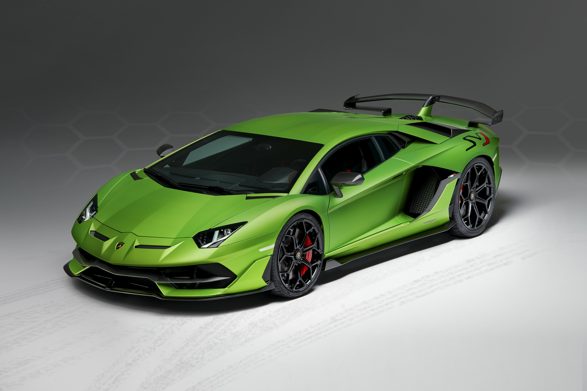

Sobre Lamborghini
Lamborghini es una reconocida marca italiana de automóviles de lujo y alto rendimiento, famosa por sus diseños vanguardistas y motores potentes. Fundada en 1963 por Ferruccio Lamborghini, la compañía ha producido algunos de los superdeportivos más icónicos del mundo, como el Miura, el Countach y el Aventador. Su logo, un toro dorado sobre fondo negro, representa fuerza, potencia y determinación.
Descripción
El Lamborghini Aventador SVJ es una obra maestra de ingeniería y diseño. Combina un potente motor V12 con aerodinámica activa, convirtiéndolo en uno de los superdeportivos más rápidos del mundo.
Especificaciones Técnicas
- Velocidad máxima: 350 km/h
- Aceleración: 0-100 km/h en 2.8 segundos
- Motor: V12 6.5 litros atmosférico
- Potencia: 770 CV
- Transmisión: Automática de 7 velocidades ISR
- Tracción: Integral (AWD)
- Peso: 1,525 kg
Galería del Aventador SVJ